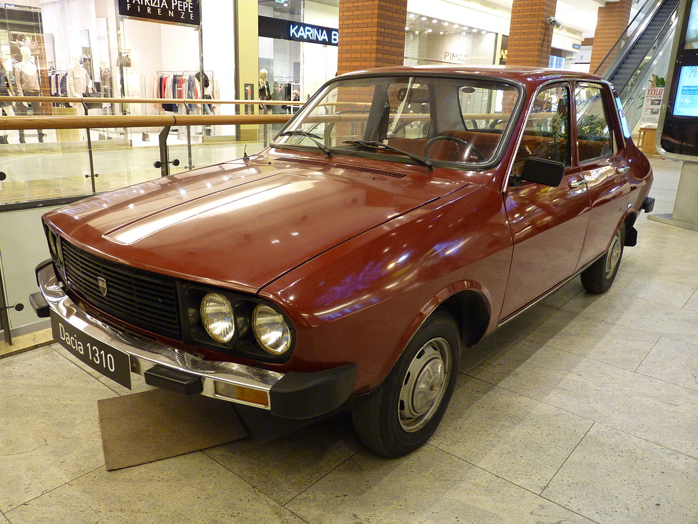
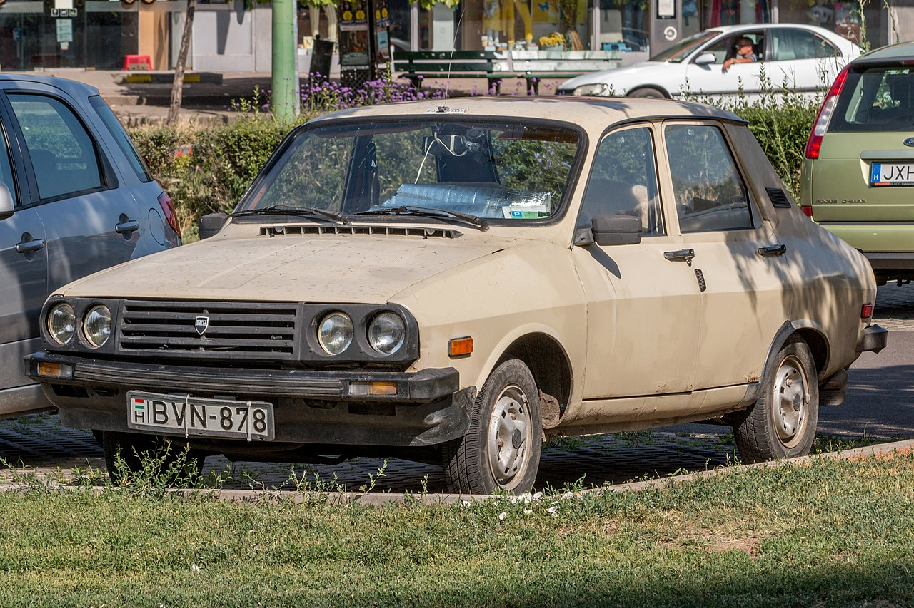
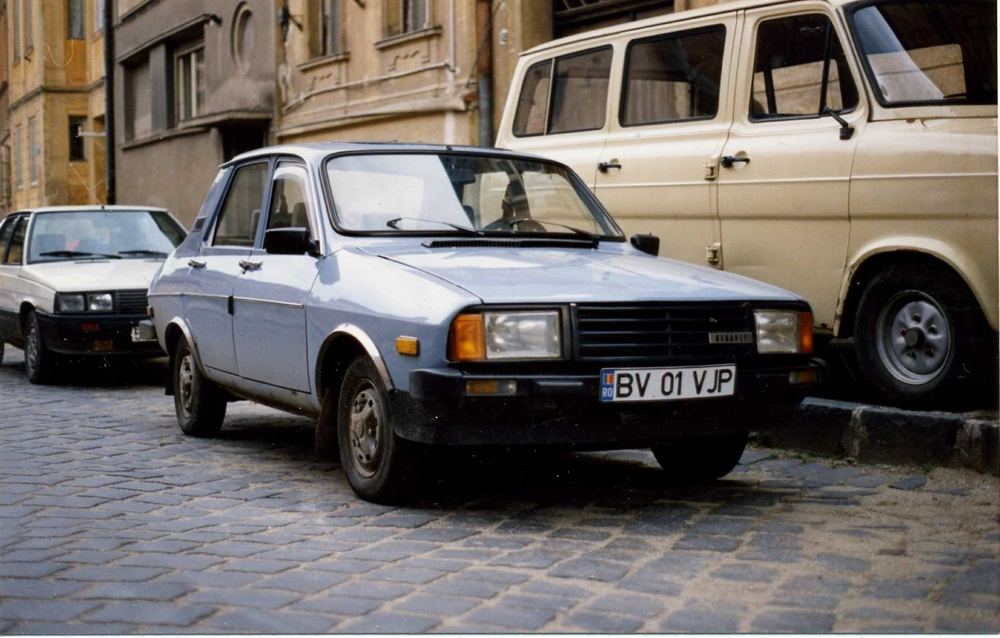
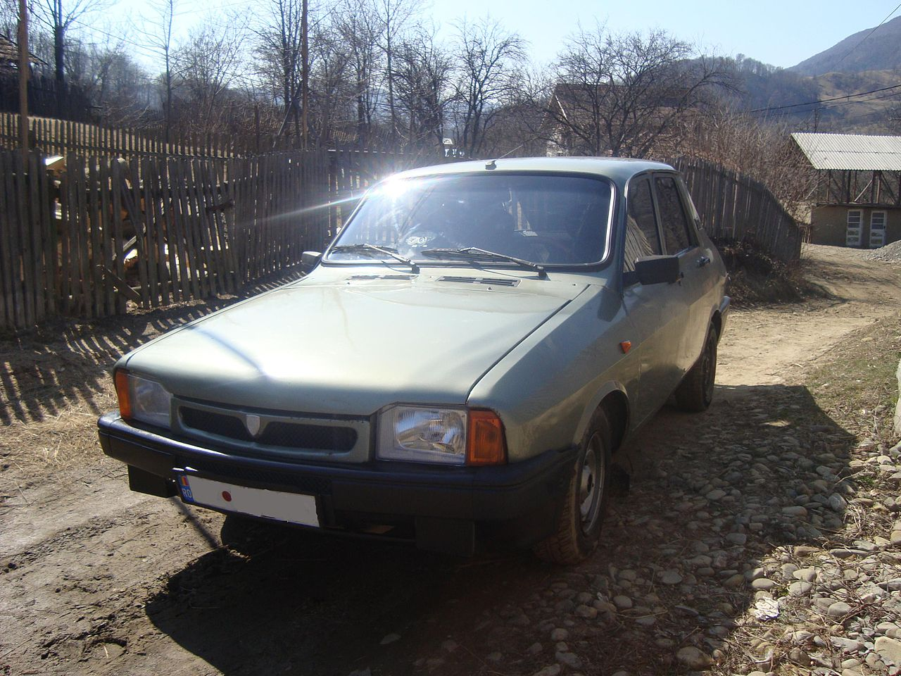

Dacia 1310
Dacia 1310 este un autoturism de familie fabricat de compania Dacia între anii 1979 și 2004, fiind lansat ca succesor al modelului Dacia 1300. Împreună cu aceasta, a fost produsă în număr de 2.278.691 de unități, ultima berlină fiind fabricată la data de 21 iulie 2004, iar ultima camionetă dacia pick-up în decembrie 2006. În același an a fost lansat succesorul ei, modelul Dacia Logan.
A fost produsă, la fel ca și Dacia 1300, în două variante de caroserie, berlină și break, fiind derivată de asemenea în versiuni cu hayon (Dacia 1320 și Dacia 1325 Liberta, produse între 1988 și 1996), camionetă (gama Dacia Pick-Up, produsă între 1975 și 2006), respectiv coupé (versiunea Sport, produsă între 1981 și 1992).
Prima generație
După expirarea licenței de fabricare a modelului Dacia 1300 (ce avea la bază modelul Renault 12) în anul 1978, are loc prima restilizare majoră, iar noul model este redenumit Dacia 1310. Aceasta a fost prezentată în premieră în toamna anului 1979 la Expoziția Realizărilor Economiei Naționale (EREN), desfășurată în București, fiind desemnat ca "modelul 1980". 
Acesta aducea modificări atât la exterior cât și la interior. Partea din față a modelului era complet redesenată, iar aceasta avea acum o mască cu o nouă formă, patru faruri rotunde și parașocuri mai înalte ce înglobau luminilie de semnalizare. La partea din spate, cele două lămpi reuneau acum într-un singur bloc luminile pentru poziție, semnalizare, frână și mers înapoi, iar portbagajului i-au fost adăugate câteva ornamente restilizate. Modelul dispunea de aparat radio, lunetă cu dezaburire, spălător electric de parbriz, frâne cu dublu circuit (servofrână pe anumite modele), oglindă exterioară și pe partea dreaptă (pe anumite modele) și scaune cu tetiere, iar spațiul pentru pasagerii din spate era mărit cu 8 cm.
Consumul obținut la o viteză medie de 80 km/h era de 7,0 litri la suta de kilometri, timpul de demarare de la 0 la 100 km/h era de 16,2 secunde, iar viteza maximă era de circa 152-154 km/h.
A doua generație
La Târgul Internațional București (TIB) din octombrie 1983 a fost prezentat autoturismul Dacia "model 1984". Acesta era echipată cu un motor de 1.400 cm³, cu putere maximă de 64 de cai putere la 5.000 rpm și cuplu maxim sporit, de 103 Nm la 3.000 rpm, preluat de la DACIA SPORT. A existat și într-o variantă detarata, 57 CP. Consumul de carburant era de 6,1-6,4 litri la suta de kilometri, la o viteză constantă de 90 km/h. Uneori aceasta era numită și dacia 1410, denumire utilizată mai rar, de menționat că inclusiv variantele de 1200, 1400 si 1600 cm³, tot dacia 1310 se numeau. In anul 1985 este lansata si cutia in 5 trepte. 
Este de asemenea prezentat și un prototip cu motor Diesel, de 1600 cm³, 54 CP si 101 Nm cuplu , cu acest motor, mașina putând atinge o viteză de 140 km/h, încadrându-se în limitele acelor ani. Pentru modelul 1985 al autoturismului a fost prezentat în premieră un motor de 1.575 cm³, asociat cu o cutie de viteze cu cinci trepte, ax cu came în chiulasă,cu o putere maximă de 80 de cai putere la 5.000 rpm și un cuplu maxim de 133 Nm la 3.000 rpm (acest motor însă, ca și modele Diesel, nu a ajuns să echipeze niciodata modelul berlină în producția de serie).
A treia generație
A suferit mici restilizari , printre care putem enumera renunțarea la masca cu 4 faruri, ea fiind înlocuită cu masca cu 2 faruri dreptunghiulare preluată de la Dacia 1320, eleron încorporat în capota de portbagaj, element creat de către inginerul Ion Romică Sandu în anul 1990 și care a fost utilizat până la sfârșitul producției, bord de culoare gri închis dotat cu 2 prize de aer amplasate la marginea acestuia, bare din material plastic, și introducerea culorilor metalizate. 
În anul 1992, se renunța la motorul de 1289 cm³ si 54 CP și la cutia de viteze cu 4 trepte, si la sfârșitul anului 1994 este introdus un motor de 1557 cm³ și 73 CP. Atât variantele Break, hatchback si utilitare suferă aceleași modificari, în afară de capota cu eleron încorporat. De asemenea dispare varianta Canada. Sunt făcute diferite prototipuri bazate pe Dacia 1310/1410. Cutia de viteze in 4 trepte mai rămâne până în anul 1997 pe varianta pickup cu motor 1400 cm³. Tot în această perioadă este lansată și o variantă derivată, Dacia 1325, care înlocuiește DACIA 1320, și partea din spate este restilizată.
Generația a patra nu aduce modificări majore.
A cincea generație
 Este restilizată din nou. Se introduc în serie jantele de 5,5Jx13. De acum, anvelopele 165/70R13 sunt standard, deși unele modele de 1557 cm³ au fost echipate și cu 175/70R13. În anul 1998 la sfârșit este introdus și motorul de 1557 cm³ cu injecție de benzină si 71 CP, preluat de la Dacia Nova. În anul 1999 la sfârșit apare și varianta de 1400 cm³ și 60 CP cu injecție. Se introduc codurile : L care înseamnă berlina cu motor de 1400 cm³, T care înseamnă berlina cu motor de 1600 cm³.
Pentru varianta break, se adoptă notații CL si CT. La variantele cu injecție se adoptă Li, Ti, CLi, CTi. În anul 1997 este prezentata o variantă pickup și o variantă break cu motor Peugeot de 1905 cm³ si 71 CP. În anul 1999 se lansează varianta 4x4 a versiunilor pick-up. În anul 1996, datorită unui succes limitat, inceteaza producția modelului DACIA 1325..
În 1999 apare generația a șasea care aduce niște schimbări în aspect.